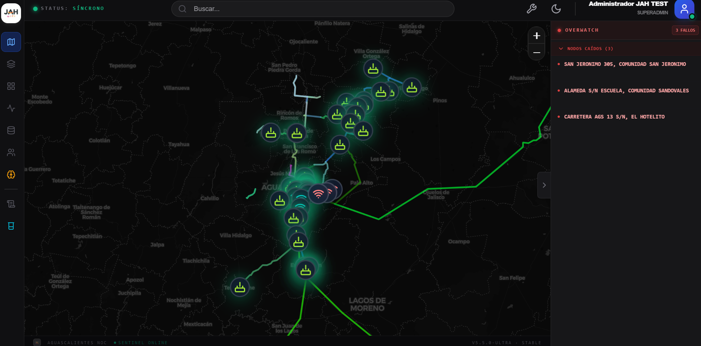
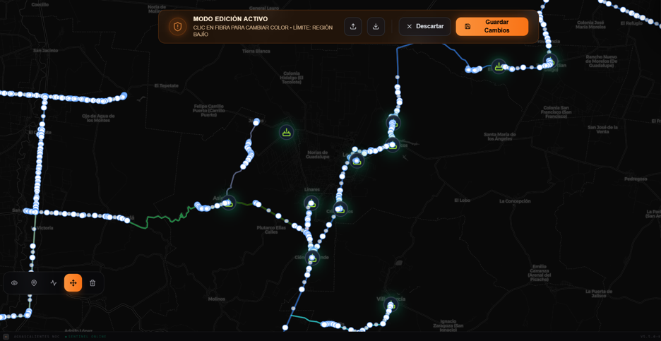
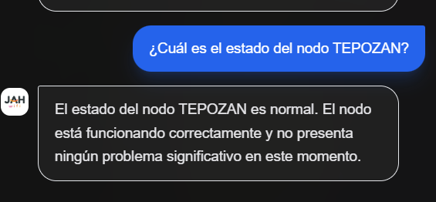
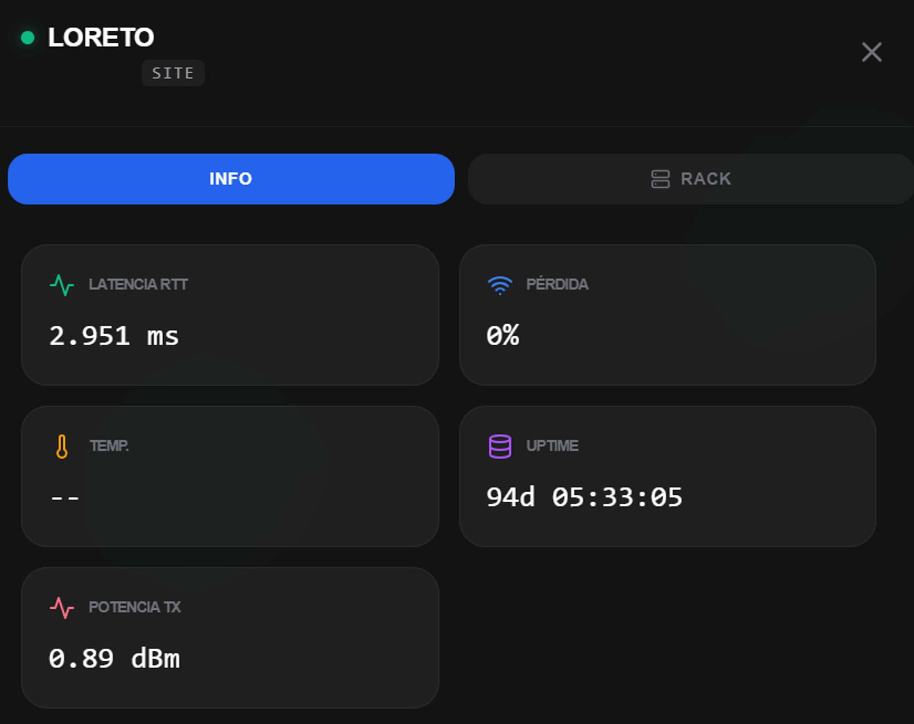

El motor de Inteligencia Artificial que convierte tu infraestructura de red en un organismo que se autodiagnostica. Deja de apagar incendios y empieza a prevenirlos con análisis topológico en tiempo real.
Cada función de JAH Sentinel fue construida con un único propósito: eliminar el tiempo muerto entre la falla y la solución.

El motor de ML de Sentinel ingiere métricas históricas de cada nodo — latencia, pérdida de paquetes, temperatura de equipo, uso de CPU — y construye un perfil de comportamiento único. Cuando un nodo comienza a desviarse de su patrón normal, Sentinel emite una alerta predictiva hasta 45 minutos antes de que el cliente reporte la falla. Tu equipo NOC actúa antes que el problema exista.
Cuando Sentinel detecta un fallo en la capa de red, ejecuta playbooks automáticamente: ajusta rutas BGP, reinicia OSPFv3 y notifica al operador.
Cada nodo y enlace proyectado sobre un mapa geoespacial interactivo. Identifica clusters de caídas y correlaciona fallas con eventos climáticos.

Sentinel ataca los tres componentes del MTTR: detección instantánea, diagnóstico automatizado y coordinación inteligente de campo. ISPs partners reportan una reducción de 72% en los primeros 90 días.
Las alertas de Sentinel no son ruido. Cada notificación incluye contexto completo y clientes afectados. Integración con Telegram y webhooks.

Informes automáticos con SLA compliance, uptime por zona y top 10 de nodos problemáticos. Datos que respaldan decisiones de inversión.

Un ciclo continuo de inteligencia que opera en segundo plano, sin descanso, los 365 días del año.
Sentinel consume datos de Zabbix, SNMP, syslog, NetFlow y APIs de equipos OLT, MikroTik y Radios en un stream de datos unificado en tiempo real.
Los modelos de ML correlacionan anomalías entre sí, eliminan falsos positivos y determinan la causa raíz con un confidence score visible para el operador NOC.
Dependiendo de la política configurada, Sentinel ejecuta la remediación de forma autónoma o presenta al operador un plan de acción listo para aprobar con un clic.
Cada incidente resuelto alimenta los modelos. Tu instancia de Sentinel se vuelve más precisa con el tiempo, adaptándose a la topología única de tu red.
Agenda una sesión de demostración de 30 minutos con nuestro equipo técnico. Te mostramos Sentinel operando sobre un entorno similar al tuyo, con datos reales.